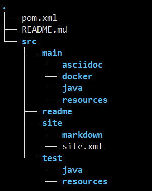

OSS-ARCHETYPE-MICRO-SERVICE
简介
本项目用于生成微服务架构的项目，C/S架构。项目中包含以下内容：
- 基本的oss dependency
- 微服务及其client项目。
- 容器化脚本
- 生成的项目包含部分样例代码，演示oss的基本使用以及测试（包括单测、集成测试）的demo。
- 整套的软件工程解决方案
使用
开发人员可以通过 mvn archetype:generate 命令，基于oss archetype生成微服务架构的项目。如下所示：
ARCHETYPE_VERSION="1.0.6.OSS-SNAPSHOT"
#ARCHETYPE_REPOSITORY="${INTERNAL_NEXUS}/content/groups/public"
ARCHETYPE_REPOSITORY="${LOCAL_NEXUS}/repository/maven-public"
groupId="cn.home1"
artifactId="micro"
package="cn.home1"
version="0.0.1-SNAPSHOT"
mvn archetype:generate \
-DarchetypeGroupId=cn.home1 \
-DarchetypeArtifactId=oss-archetype-micro-service \
-DgroupId=${groupId} \
-DartifactId=${artifactId} \
-Dversion=${version} \
-Dpackage=${package} \
-DarchetypeVersion=${ARCHETYPE_VERSION} \
-DarchetypeRepository=${ARCHETYPE_REPOSITORY}
通过以上命令，生成 artifactId 为 micro，groupId 为 cn.home1 的项目。
项目架构
目录结构
以上面生成的 micro 项目为例，目录组织如下所示。
.
|--- ci.sh
|--- micro-client/
|--- micro-service/
|--- pom.xml
|--- README.md
`--- src
通过oss-archetype-micro-service生成的微服务骨架项目是一个多模块的父子项目，各目录及文件说明如下。
ci.sh
持续集成的具体执行脚本，可用于gitlab-ci或者其他类似travis的持续集成服务。
src
父项目src目录文件组织结构
.
├── main/
│ ├── checkstyle/
│ │ └── google_checks_6.19.xml
│ ├── maven/
│ │ └── settings-internal.xml
│ └── pmd/
│ └── pmd-ruleset-5.3.5.xml
├── readme/
└── site/
├── markdown
└── site.xml
目录说明
- main目录
- 存放maven的配置文件，以及checkstyle以及pmd插件配置。
- TODO: 用户如何使用？
- readme目录
- 用于存放项目根目录下README.md中引用的图片等静态文件
- site目录
- 存放项目的文档，用于生成maven静态网站以及gitbook。
service / client
这四个目录是父项目的两个子项目，各项目的简要说明如下：
- service(本案例中为 micro-service，下同) 项目为微服务的具体业务逻辑实现。
- client 项目提供 service 项目的 sdk，对 service-test 的远程调用必须通过 client。
子项目文件组织结构
以service项目为例，如下图所示：

子项目src目录说明
- src
- main
- asciidoc
新增目录。与Rest Docs相关的目录 - docker
新增目录。除Dockerfile之外，将jar打包成docker镜像需要的的脚本、静态资源等 - java
代码文件 - resources
配置及资源文件- docker
Dockerfile文件，包含环境变量
- docker
- asciidoc
- readme
存放子项目README.md引用的静态文件 - site
存放用于生成项目maven site静态页面的索引及markdown文件- site.xml
介绍和使用请参照[这篇文档](TODO)
- site.xml
- test
测试代码及resource目录，
- main
其他项目的目录组织方式与 service 类似，不再赘述。client 项目中没有 src/main/docker 目录，因为对它们的访问是通过本地调用，不需要启动服务。
项目设计思路
项目整体架构

上图是简化的微服务的RPC模型。
- 虚线标明各模块之间的依赖关系。
- client <--> service 之间通过微服务RPC进行通信。
- 服务提供方为P，服务的消费者为C。
- P同时可以是其他服务的消费者或者提供方，C也是。
上文讲到微服务体系里一个完整的项目会包含两个子项目。如下是各子项目的详细说明。
service 模块
service 项目是业务逻辑的具体实现，它往往用作其他服务的服务提供者或消费者。
系统启动之后，会在 eureka 上进行注册，方便服务消费方通过名字找到具体的地址。
client 模块
client 项目作为 service 项目的 sdk，必须由服务提供方的开发者提供, 供服务的消费方引入以达到访问 service 服务的目的。
接入OSS的RPC框架的服务提供者，需要为消费者提供客户端工具包，基本开发思路如下：
- 通过feign调用后端app服务，可以将hystrix以及ribbon挂在Feign上，加入熔断机制和负载均衡策略；
- 项目接入
lib-security的场景下，需要注意以下事情：- 服务的 provider 与 consumer ，生成 cookie 和 token 的 jwtKey 以及 cookieKey 必须一致，且共用一套用户认证以及权限逻辑；
- 会自动读取请求 header 的 token、cookie 等认证信息，向后端传递，不需要在SDK里作额外处理。
- SDK 项目应保持最小依赖集合。
其他的 Java 项目也应该如此，不要有多余的依赖。
测试
测试样例
通过oss项目骨架生成的项目，本身就是一个可以直接运行的服务。在我们的项目代码里有各种测试的样例。 以 service 项目为例。src/test 目录下我们放置了如下测试：
.
├── GreetingControllerDocumentation.java
├── GreetingControllerMockMvcTests.java
├── GreetingJsonTests.java
├── GreetingRepositoryTests.java
├── IsolatedGreetingControllerMockMvcTests.java
├── ResourcesServiceMavenPluginIT.java
├── ResourcesServiceRestAssuredIT.java
└── ResourcesServiceRestTemplateIT.java
- GreetingControllerDocumentation。 使用 Spring MVC Test，通过测试case自动生成文档，文档使用asciidoc进行编写。
- 以
Tests结尾的文件，代表该测试类执行的是单元测试。 - 以
IT结尾的文件，代表该测试类执行的是集成测试。
对于测试样例中涉及到的各个测试框架，请自行查看官网文档。
测试文件的分类
我们在 maven 配置文件中，指定在 mvn test（单元测试）和 mvn integration-test（集成测试）过程按照测试文件命名方式，执行相应的测试。
符合以下测试类命名规范的文件会在 mvn test 阶段执行:
- */Documentation.java
- */Test.java
- */Test.java
- */TestCase.java
- */Tests.java
符合以下测试类命名规范的文件会在 mvn integration-test 阶段执行:
- */IT.java
对集成测试和端到端测试的增强
以往进行集成测试，对于依赖的模块/服务，通常以mock数据的方式模拟待测试的逻辑，mock数据主要有以下两种方式：
- “桩”，不区分用户的输入，永远返回相同的数据
- 根据指定的参数返回预先设定好的数据
对于简单的测试，可以使用“数据桩”的方式。
对于端对端的测试，往往通过ci或者手动部署各个依赖的服务以进行测试。
新的集成测试和端到端测试方案
通过容器化的方案，开发人员只需要在pom.xml文件中进行配置，就可以在ci执行集成测试之前启动依赖的服务。针对微服务集成测试的场景，我们做了如下工作：
- 在项目的服务依赖加入默认的eureka、configserver。
- 加入等待机制，等待依赖的服务启动起来并且rpc的服务在eureka中注册并发现自身；
- 依赖的服务以随机端口启动，防止与其他的测试发生冲突。
- 可以通过maven docker插件的配置，定义在
integration-test阶段具体启动依赖服务的 service 还是 service-test 镜像。
通过pom.xml配置依赖服务
- 依赖的服务，在本地启动 docker 的容器。
可以采用如下方式，在 images 列表里添加依赖服务的配置
<build> <plugins> <plugin> <groupId>io.fabric8</groupId> <artifactId>docker-maven-plugin</artifactId> <configuration> <images> <!-- dependency image configuration here --> </images> </configuration> </plugin> </plugins> </build>执行测试之前，需要依赖的服务已经启动，并且在 eureka 执行了注册操作。
如何确定依赖的服务已经正确启动？
我们提供了工具，可以在系统启动之后检查是否已经注册，并提供 Restful 信息反馈接口。
使用
在 pom.xml 中引入如下依赖：
TODO
按照上文描述的方式，在相关 image 的配置中加入如下配置：
<image> <!-- others --> <wait> <http> <url>http://${it.eureka.host}:${it.eureka.port}</url> <method>GET</method> <status>200</status> </http> <time>60000</time> </wait> <!-- others --> </image>
这样就可以保证，等待依赖的服务启动之后，集成测试才开始执行。
建议
- 我们不建议在执行集成测试的过程启动过多的依赖服务，集成测试过程应该尽量使用dummy/fake/stub/mock等方式。
- 如果服务的依赖众多，测试等待过程会非常漫长，建议只在执行端对端测试的时候采取这种方式。
持续集成
项目 profiles 设置
为了区分各个环境以及软件开发的过程，我们将 profile 需要分为一下 5 种：
- development.env，用于开发者在本机开发测试使用
- ut.env，用于ci执行单元测试
- it.env，用于ci执行集成测试
- staging.env，用于QA验收，线下环境部署
- production.env，用于生产环境部署
ci.sh说明
上文提到项目的持续集成脚本放在项目根目录的 ci.sh 文件里。该脚本默认有如下参数:
test_and_build
- 每次代码提交触发；
- 会执行mvn test以及项目构建逻辑
- 常用于在代码提交之后执行测试和构建，测试包括单元测试和集成测试
publish_snapshot
- develop 分支提交触发。
- 会执行如下操作：
- 项目 jar 包及 Docker 镜像构建
- jar 包和 Docker 镜像发布
- 根据文档生成的静态网站发布到 develop 目录
publish_release
- master 分支提交触发。
- 会执行如下操作：
- 项目 jar 包及 Docker 镜像构建
- jar 包和 Docker 镜像发布
- jar包和根据文档生成的静态网站发布到生产环境
publish_release_tag
- git tag提交触发，tag名字必须遵循 ^release.+$ 规范，例如
release-v1.0.0。 - 暂未加入操作。
- git tag提交触发，tag名字必须遵循 ^release.+$ 规范，例如
我厂持续集成实践
我们将持续集成的逻辑抽离出来放到 ci.sh 脚本里，这样可以在任意持续集成环境里调用 ci.sh 实现项目的持续测试、构建、发布等逻辑。
目前我们用到的 ci 工具是 gitlab-ci。只需要在项目的根目录下放置一个 ".gitlab-ci.yml" 文件，配置好gitlab事件的触发机制即可。开发人员通过 oss 骨架生成项目之后，我们默认启用了 gitlab-ci，并加入了如下配置：
- 针对任意分支的代码提交，触发 on_every_push 操作, 执行 test_and_build 逻辑；
- 针对 develop 分支的代码提交，触发 on_develop_push 操作，执行 publish_snapshot 逻辑。
- 针对 master 分支的代码提交，触发 on_master_push 操作，执行 publish_release 逻辑。
- 我们建议项目屏蔽掉 developer 向 master 分支提交代码的权限，所有向 master 分支的合并操作都通过管理员在 gitlab 用户交互界面通过手动点击 “create pull request”，发起代码合并。
- 针对 git tag ，触发 on_release_tag 操作，执行 publish_release_tag逻辑，目前这个操作不执行任何任务。
因为 test_and_build 操作是针对任意分支的代码变更都会触发，所以develop、master分支以及git的tag操作，都会首先触发 test_and_build 操作。
用户可以根据需求，修改 ci.sh 逻辑以及持续集成的工具和流程。在没有更好的实现之前，建议按照现有的标准来执行。
生成文档及项目报告
ci执行测试构建和生产构建时，会自动为项目生成maven site网站内容并发布到 mvn-site.internal 网站。
关于接入 oss-build 的项目构建 maven site 以及具体生成的网站内容，请参照这篇文档。
构建、发布和部署方案
术语定义
- 构建
- 微服务项目的构建包括两方面：
- client 项目需要构建 jar 包，方便服务的消费方引入依赖。
- service 项目需要构建 docker 镜像，方便服务的部署。
- 微服务项目的构建包括两方面：
- 发布
- 发布操作包含两部分内容
- client 项目的 jar 包需要发布到 nexus 仓库
- service 项目需要构建 docker 镜像，发布到 docker-registry 仓库。
- 发布操作包含两部分内容
- 部署
- 将发布到公司 docker-registry 仓库的镜像，部署到测试或者生产环境。
- 管理员或者运维人员，通过在 jenkins 上鼠标点击或者定时操作触发。
构建Docker镜像。
通过 oss 骨架生成的项目，默认支持如下功能：
- 项目的 maven 配置中，对 maven 的插件、生命周期管理等进行了完善的配置；
- 在 service 项目的 src/main/resources/docker 中加入了 Dockerfile，用于构建 Docker 镜像；
- 通过 maven 的插件，将项目的构建、发布操作与maven生命周期绑定在一起。
mvn clean，清理本地构建好的 jar 包和 docker 镜像。mvn package，可以完成上文中的“构建”逻辑。mvn deploy，可以完成上面提到的项目“发布”逻辑。
通过ci执行镜像的构建与发布。
- 在持续集成过程中，默认在向develop和master分支提交代码的时候，执行docker镜像的构建与发布。
构建与发布分离
- 发布可以在任意时间执行。发布过程失败不会污染生产的环境。
- 部署过程节省了构建和发布的时间，上线更加迅速。
- 镜像发布到 docker-registry，可以保存镜像的多个版本。
- 如果生产部署失败，可以从 docker-registry 里找到之前的稳定版本，快速回滚。